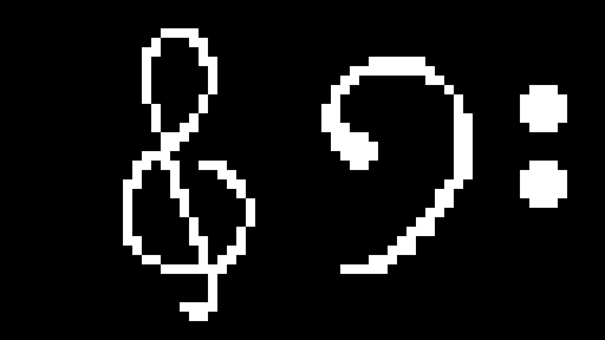

Computercraft Songs lets you create custom songs for the Computercraft: Tweaked Minecraft mod.
Features
Playing Music
- Play songs with a 25-note range
- Choose from 16 musical instruments like guitar, banjo, or even didgeridoo!
- Play chords on multiple speakers, or melodies on one
MIDI Converter
- Convert MIDI files to compatible songs
- Make songs using Minecraft noteblock numbers or regular music notation
- Use online or offline